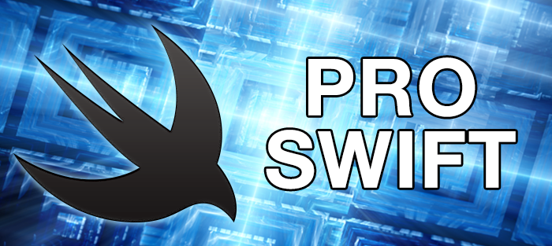

Wayne Bishop (@waynewbishop), author of Swift Algorithms and Data Structures
This extension has been a long time favorite:
extension Int {
// iterates the closure body a specified number of times
func times(closure: (Int) -> Void) {
for i in 0...self {
closure(i)
}
}
}
What I like is its readability and usefulness. It's a neat alternative to default looping formats as it can also capture its surrounding state.
Although some people wish it were not the case, object-oriented programming (OOP) is the de facto standard way of building software. It's not everywhere: a lot of software is still built in C (which pre-dates OOP), and as you'll see in the following chapter Swift can be written using a similar-but-different approach called protocol-oriented programming (POP).
Even when using POP, Swift still relies on the OOP underbelly of Cocoa Touch, which was written for Objective-C – a language so aggressively object-oriented that they baked "object" right into its name. If you need to write apps for iOS or OS X, you need to understand a little OOP in order to interact with the system. If you intend to interact with other developers, more often than not they will use OOP. If you intend to find examples online, more often than not they will use OOP too – it's unavoidable no matter how much you might love POP.
In this chapter I'm going to start by giving you a lightning fast introduction to OOP, including examples in Swift. If you already understand terms like "polymorphism", "encapsulation", and "static" then you're welcome to move on.
OOP attempts to model programs in terms of entities that have real-world equivalents. So, if you were making an app to track hospital bookings, you'd have an entity for patients, an entity for wards, an entity for the building, an entity for staff, an entity for bookings, an entity for operations, and so on. You can be as fine-grained or otherwise as you want, but the goal is to make your entities – usually classes in OOP – reflect actual things that exist in the real world.
This makes OOP easy to pick up: you can just write down a list of the nouns you care about – "patient", "doctor", "ward", and so on – then make a class for each of them. In theory this breaks up your program into small, re-usable parts that each have specific pieces of responsibility for part of your program, but it also means you make your big architectural decisions very early in your development, and sometimes these can hinder your flexibility later.
Once you have decided your nouns – i.e., created all the classes for things you care about – you add data to them in the form of properties, and add verbs to them in the form of methods.
Methods are effectively identical to functions, but they carry an implicit self parameter. For example, look at the code below:
class Meh {
func doStuff(number: Int) { }
}
The doStuff() function belongs to the Meh class, so we call it a method instead. And behind the scenes, it actually looks like this:
func doStuff(self: Meh, number: Int) { }
Objects are reference types in Swift, which means they can have multiple simultaneous owners, any of which can manipulate the object. This creates implicit dependencies across your program, which can add complexity and fragility.
Because classes have their own properties and methods, they can be said to encapsulate functionality: a Doctor class can have all the functionality required to work as a doctor in a hospital, and the rest of your program can just call your doctor's methods to make things happen.
Encapsulation is a fundamental concept in OOP, and so access modifiers exist to enforce a set of rules. Continuing with the doctor example, consider this class:
class Doctor {
var name = "Gregory House"
var currentPatient = "Taylor Swift"
}
Note: I'm using default values for the properties to avoid having to write pointless initializers.
That Doctor class has a currentPatient property that holds the name of the patient they are currently attending to. Now something has gone wrong elsewhere, and Dr House is required to dash off to see another patient as a matter of priority – how should that change happen?
One option is to create a Hospital class that can force Dr House to move, something like this:
class Hospital {
func assignDoctor(dr: Doctor, toPatient patient: String) {
dr.currentPatient = patient
}
}
However, this is the antithesis of encapsulation: the Doctor class should contain all its own functionality, and having the Hospital class poke around in a doctor's properties will create spaghetti code. What if the doctor is in the middle of a check up? Or is on vacation? By placing functionality inside the Doctor class you centralize your logic in one place: you can refuse to move if the current task is important, you can refuse to move if you're on vacation, and so on. This means treating objects like black boxes: you don't touch their properties directly.
So, the smarter way to assign a doctor to a new patient is like this:
class Doctor {
var name = "Gregory House"
var currentPatient = "Taylor Swift"
func assignToPatient(name: String) {
currentPatient = name
}
}
You can then go ahead and add any validation directly into assignToPatient().
When I was much younger, I wrote a small strategy game that was similar in intention – if not completion! – to the game Civilization. I was fairly new to programming back then, so I didn't use encapsulation at all. When a turn ended and I wanted to figure out how much gold each city generated, I added a loop to my Game class that went through every city, pulled out its population, then multiplied that by the tax rate. I had to copy and paste that code into the city view so that the player could click on a city and see exactly how much money it generated, but that was OK.
When I let the player create buildings in cities to increase tax revenue, I had to modify my turn end loop: get population, multiply by tax rate, then modify by building improvements. Of course I had to copy that code into my city view calculation too, but that was only a few extra lines. Then I let players improve the squares around their cities, and some squares brought in more gold than others, so I added that to my turn end loop… but completely forgot to add it to the city view.
You should be able to see why my approach was bad, and why encapsulation would have made it go away. Duplicating code is always bad, particularly because you need to remember all the places you've made duplication so you can update them all when you make a change – something you will inevitably get wrong. Once I realized my mistake, I switched tax calculation into a single calculateTax() method on my City class, and all the logic to calculate a city's gold was contained in just one place.
Going back to the Doctor class, just creating an assignToPatient() method is insufficient to guarantee encapsulation, because other parts of your code are free to ignore the method and adjust the properties directly. Remember, that assignToPatient() method might contain all sorts of logic to validate whether the doctor could move, as well as other things such as updating their diary – we really need people to use it, rather than adjust currentPatient directly.
This is where access modifies come in: you can tell Swift that only certain parts of your code can read or write properties or call methods. There are three access modifiers you can use:
private means "this can only be used by code in the same file."internal means "this can only be used by code in my module", which is usually your app.public means "anyone can use this."Swift's definitions are different from other languages, and I suspect they will change in the future to be more closely aligned with what people expect. The main difference is private: in languages such as C++, private means "only the object that owns this property or method can use it," but in Swift other code can touch a private property or method as long as it's written in the same file. Because playgrounds are just one big source file, this makes private useless in playgrounds. internal is mainly important when you're writing a framework, because it allows any of your code to use a property or method but any external code will be denied access.
When working with private properties, you can make a property fully private just by using the private keyword, like this:
private var currentPatient = "Taylor Swift"
If you want everyone to be able to read the property but make writing it private, you should use private(set) instead:
private(set) var currentPatient = "Taylor Swift"
Once your properties are private, you need to introduce methods to read and write them, commonly called getters and setters. The rest of your app then manipulates your objects using these getters and setters, thus ensuring everyone uses the logic you set down in your methods.
The classes you define in your OOP app will frequently have common properties and methods, but naturally you don't want to duplicate code so instead you can use a technique called inheritance. This lets you create a new class based on an existing one, and it imports all the properties and methods as it goes. When you create a new class this way it's called a subclass, and the class you inherited from is called the super class. You'll also hear subclasses referred to as "child" classes, which makes the class you inherited from the "parent" class. You can inherit as many times as you want, so you can have grandparent classes and even great-grandparent classes, although those names are rarely used!
Inheritance is another fundamental technique inside OOP, and it's endemic in Apple's systems. If you create a new iOS Single View Application in Xcode, you'll get a class called ViewController that inherits from UIViewController, but UIViewController itself inherits from UIResponder, which inherits from NSObject, which is the root class in Objective-C – the thing that all other classes must start with.
Inheritance is useful because it lets you import huge amounts of functionality then add to it. For example, nowhere in the ViewController class does it say how to behave when the screen is rotated, or how to load a layout from a storyboard, but all that functionality is automatically brought in by inheriting from UIViewController.
When you create class Surgeon by inheriting from class Doctor, you bring with it all of Doctor's properties and methods, which might in turn bring in properties and methods from Employee, and so on. You can then add your own specific properties and methods to Surgeon to do things that doctors don't do, but you can also override existing behavior that came with the Doctor class – you can say "don't do that, but do this instead."
Overriding behavior is explicit in Swift, which is not the case in many other languages. To demonstrate this, let's make the Doctor and Surgeon classes:
class Doctor {
var name = "Gregory House"
var currentPatient = "Taylor Swift"
}
class Surgeon: Doctor { }
The Doctor class defines a couple of basic properties, and the Surgeon class inherits from Doctor so it gets those properties. This makes sense: everyone has a name regardless of whether they are doctors or surgeons. If we wanted to allow our surgeons to perform surgery, we could add a performSurgery() method to the surgeon class like this:
class Surgeon: Doctor {
func performSurgery(isEmergency emergency: Bool) {
if emergency {
print("OK, let's go!")
} else {
print("I'll do it next")
}
}
}
So far, so easy. But if we need to allow doctors to perform surgery too, things get more complicated. Just adding performSurgery() method to the Doctor class is easy enough:
class Doctor {
var name = "Gregory House"
var currentPatient = "Taylor Swift"
func performSurgery(isEmergency emergency: Bool) {
if emergency {
print("OK, let's go!")
} else {
print("Please find a surgeon")
}
}
}
However, now Doctor has a performSurgery() method which Surgeon inherits, then Surgeon declares its own performSurgery() method – Swift doesn't know which one to use, so it will refuse to compile. To fix the problem, you need to make your intention clear: either delete the surgeon's performSurgery() method (so that Swift will use the doctor's performSurgery() method), change the surgeon's method so that it has a different signature (e.g. performSurgery() rather than performSurgery(isEmergency emergency: Bool)), or tell Swift that the surgeon's method overrides the existing method from Doctor, like this:
class Surgeon: Doctor {
override func performSurgery(isEmergency emergency: Bool) {
if emergency {
print("OK, let's go!")
} else {
print("I'll do it next")
}
}
}
Anything you don't override will be inherited from the parent class.
As you've seen, when you inherit one class from another, you either use the parent class's methods or you override the ones you want to change in the child. There is a third way, which lets you use the existing functionality of a parent's method and add some custom tweaks in the child.
Let's work up an example: our doctors have an assignToPatient() method like this:
func assignToPatient(name: String) {
currentPatient = name
}
By default, that will be inherited by the Surgeon subclass, but we want to make surgeons do something special: when we call assignToPatient() on Surgeon we first want them to ask some junior doctors for a diagnosis so they have a chance to learn, then we want to call the existing assignToPatient() method on Doctor.
Swift makes this easy using the super keyword, which works like self but for parent classes. If the Surgeon class overrides assignToPatient() to add its own functionality, it can at any time call super.assignToPatient() to have the code in the Doctor class execute. This means you don't need to duplicate any code: Surgeon handles the parts it cares about, then lets Doctor do the rest. In code, it looks like this:
class Surgeon: Doctor {
override func assignToPatient(name: String) {
getJuniorDoctorDiagnosis()
super.assignToPatient(name)
}
func getJuniorDoctorDiagnosis() -> String {
return "He's dead, Jim"
}
}
The only complication is when working with init(), which has some strict rules. Specifically:
super.init() in the child class to allow the parent to construct itself.super.init().super.init().super.init().To illustrate the correct layout for initializing a subclass, here's a modified Doctor class with a simple initializer:
class Doctor {
var name: String
var currentPatient: String
init(name: String, currentPatient: String) {
self.name = name
self.currentPatient = currentPatient
}
}
If Surgeon doesn't introduce any new properties of its own, it will use the existing Doctor initializer. To make things more interesting, let's allow surgeons to have their own title. A curiosity in the UK is that most doctors are referred to using the title "Doctor", but the most senior ones – consultants – prefer to be referred to as Mr, Mrs, Miss, or Ms even though they are also fully qualified doctors. So if I were a regular doctor I'd be "Dr Hudson," but if I were a consultant I would be "Mr Hudson."
Let's modify our Surgeon class to allow a custom title to be used, as they are senior doctors. Here's the code:
class Surgeon: Doctor {
var title: String
init(name: String, title: String, currentPatient: String) {
self.title = title
super.init(name: name, currentPatient: currentPatient)
}
}
Notice that self.title gets initialized before super.init() gets called. If you try to put these two lines the other way around, Swift will refuse to build your code. If you try to adjust self.name before calling super.init(), Swift will refuse to build your code. If you remove super.init() or try to call any other methods before using super.init(), Swift will refuse to build your code – it's extremely strict!
Polymorphism is a word pulled from two Greek words that mean "many shapes", and in OOP it means an object can be used like its own class or any of the classes it inherits from. It's best explained using an example, so below is an array of Doctor objects that lists which doctors are available for work right now:
var availableDoctors = [Doctor]() availableDoctors.append(Doctor()) availableDoctors.append(Doctor()) availableDoctors.append(Doctor())
In that code, the availableDoctors variable is an array containing Doctor objects. But Surgeon inherits from Doctor, so as far as Swift is concerned it is a Doctor too. This means we can add surgeons to the array directly, like this:
var availableDoctors = [Doctor]() availableDoctors.append(Doctor()) availableDoctors.append(Doctor()) availableDoctors.append(Surgeon()) availableDoctors.append(Doctor())
Swift knows this is safe, because Surgeon inherits from Doctor and so either inherits its properties and methods or overrides them. For example, we can loop over the array and call performSurgery() on each item, and Swift will call the correct version of performSurgery() depending on each object it finds:
for doctor in availableDoctors {
doctor.performSurgery(isEmergency: false)
}
That will output the following:
Please find a surgeon Please find a surgeon I'll do it next Please find a surgeon
Polymorphism allows the Surgeon object to work simultaneously like a Doctor and like Surgeon: it can added to an array of doctors, but use the Surgeon version of performSurgery() thanks to a technique called dynamic dispatch. This would not work if we declared availableDoctors to have the data type [Surgeon] because you can't add a parent class (Doctor) to an array of the child class (Surgeon).
It can be really helpful to inherit from a class and modify the way it works, particularly because it lets you build complex objects quickly. However, some classes need to work a specific way, and it might be confusing and/or risky to modify that behavior. For example, if you created a banking framework that others could integrate into their apps, would you really want to let them subclass your types and modify the way they worked? Probably not!
Swift lets you mark classes using the final keyword, which means "don't let anyone subclass this." So, this code will not compile:
final class Doctor { }
class Surgeon: Doctor { }
You can also mark individual properties and methods if you want, which allows someone to inherit from your class but not modify specific parts of it.
Because of the way Swift is built, there is a potential performance benefit to declaring things as final. Unless you enable whole module optimization, Swift needs to perform extra checks before making a method call because it needs to check whether it has been overridden somewhere else. Marking properties, methods, or even whole classes as final eliminates this check, so your code will run a little faster.
Unless you have specifically designed your class to be inheritable, you should mark it final.
Sometimes you will want to create properties and methods that belong to a class rather than an object. The difference might seem subtle, but it's important: a regular property or method belongs to an instance of the Doctor class, e.g. Gregory House, whereas a class property or method is shared across all doctors.
For example, you might create a method that recites the Hippocratic oath – a medical promise that many physicians take when they graduate medical school. This oath is the same for all doctors, so instead we can create a single method that can be called directly on the Doctor class. To do this, just write static before your method, like this:
class Doctor {
static func quoteHippocraticOath() {
print("I will prevent disease whenever I can, for prevention is preferable to cure.")
}
}
Doctor.quoteHippocraticOath()
When you use static func, you're making a class method that also happens to be final. If you want to allow subclasses to override the method, you can use class func instead of static func.
Static properties are also possible, and again just require the static keyword:
static let latinTitle = "Medicinae Doctor"
Protocol-oriented programmers sometimes like to think they have a monopoly on composition, which isn't true: many OOP developers have been encouraging composition rather than inheritance for some time, although it's fair to say the uptake has been patchy.
In OOP, the contrast between inheritance and composition is often called "is-a vs has-a". A surgeon is a doctor, so it makes sense to inherit Surgeon from Doctor. A surgeon has a scalpel, which means the Surgeon class could have a property called scalpel, but it would be strange if Surgeon inherited from Knife.
In the unlikely event you find yourself unsure whether to create a new class using inheritance or by adding a property, try using the "is-a / has-a" comparison and see if it helps.
Swift 2.0 introduced some major changes to the way protocols work, and in doing so introduced a new way to build software dubbed protocol-oriented programming (POP). It is not entirely new – far from it! – and indeed builds upon Swift techniques you should already be familiar with: protocols, extensions, value types, and more. This means Swift blends OOP, POP, and functional approaches all in a single language, so it has something for everyone.
POP uses nearly all the same tools you would use with OOP, so you should already have a sound understanding of OOP to continue. It follows the same principles of encapsulation and polymorphism from OOP, but it does away with inheritance. Instead, POP encourages you to build your app architecture horizontally rather than vertically: you add functionality by adopting protocols rather than inheriting from parent classes. A large part of the approach comes through the protocol extension syntax introduced in Swift 2.0, which lets you add functionality in smart, focused ways.
Protocol extensions combine two previous technologies, which are – surprise! – protocols and extensions. A protocol is a promise of functionality: the compiler will ensure that anyone who wants to conform to the protocol must implement all the methods you specify. For example, we could create an Payable protocol that requires a calculateWages() method to be implemented in any conforming data type:
protocol Payable {
func calculateWages() -> Int
}
When an object adopts a protocol like Payable, it means you can call calculateWages() on it and expect to get an integer back. What the actual method does internally is an implementation detail, but that's not a bad thing: it means you can use any data type that conforms to Payable without wondering about what their code does, as long as they stick to the API contract – as long as they implement calculateWages() with the specified type signature.
Extensions allow you to add functionality to specific types. For example, you can add a squared() method to integers like this:
extension Int {
func squared() -> Int {
return self * self
}
}
That will then apply to all Int values, so you can call it like this:
let number: Int = 5 let result = number.squared()
Protocols have the disadvantage that they contain only declarations of methods; if you try to include any functionality in a protocol, the compiler will refuse to build your code. Extensions can add functionality, but they only apply to specific data types – we just extended Int, but not any of the other integer types. So code like this won't work because it uses a UInt rather than an Int:
let number: UInt = 5 let result = number.squared()
Protocol extensions combine the two: they let you provide complete default implementations for functions in the same way as extensions, but apply at the protocol level rather than the individual data type level. So, we could extend all integers to add a squared() method like this:
extension IntegerType {
func squared() -> Self {
return self * self
}
}
These implementations are default implementations, which means they exist as standard but can be overridden if you need. Note that squared() returns Self with a capital S: this means "return whatever data type I'm being used with."
Protocol extensions let us add functionality to whole classes of data types, either by creating new protocols and extensions, or just by adding a protocol to an existing type. But it does have a few complexities that you must be aware of before starting, so let's get them out of the way now.
First, if you're creating a new protocol you need to separate creating the protocol and adding functionality. For example, if we wanted to create an Payable protocol that had a default implementation of the calculateWages() method, we would need to create the protocol then separately extend it, like this:
protocol Payable {
func calculateWages() -> Int
}
extension Payable {
func calculateWages() -> Int {
return 10000
}
}
Second, Objective-C is not aware of any protocol extensions you build, which means you can't create extensions for UIKit protocols like UITableViewDataSource and expect them to work. To be more specific, you're welcome to create the extensions, but UIKit won't be able to see them – they'll have no practical effect.
It also means that if you create any @objc protocols your extensions will be ignored by Swift too. For example, in the code below the extension is ignored:
@objc protocol Payable {
func calculateWages() -> Int
}
extension Payable {
func calculateWages() -> Int {
return 10000
}
}
Third, this separation of declaration (listing the type signature in the protocol) and the definition (writing the actual code in the extension) has meaning: if you do things slightly differently, your code will behave differently and perhaps even unexpectedly. Consider the code below, which creates an Payable protocol and extends it to provide a default implementation of the calculateWages() method:
protocol Payable {
func calculateWages() -> Int
}
extension Payable {
func calculateWages() -> Int {
return 10000
}
}
To test that out, we can create an empty Surgeon struct, then extend it so that it uses our Payable protocol, like this:
struct Surgeon { }
extension Surgeon: Payable { }
Just doing that is enough for surgeons to have the calculateWages() method – we retroactively declare that the Surgeon struct builds on the Payable protocol, and don't need to add any custom code to get all the Payable functionality for free. So this will print out "10000":
let gregory = Surgeon() gregory.calculateWages()
Remember, the calculateWages() method we added to Payable is just a default implementation, so any conforming data type can write its own version that does something different, like this:
extension Surgeon: Payable {
func calculateWages() -> Int {
return 20000
}
}
Here is where things get complicated: when you list a method in your protocol, you're making it available as a customizaton point for people who want to write their own implementations. If you don't list a method in your protocol, but do provide a default implementation, that implementation might be used even if it has been overridden later on. What matters is the data type you're using. Yes, this is confusing, but I hope the code below will explain:
protocol Payable {
// func calculateWages() -> Int
}
extension Payable {
func calculateWages() -> Int {
return 10000
}
}
struct Surgeon { }
extension Surgeon: Payable {
func calculateWages() -> Int {
return 20000
}
}
let gregory = Surgeon()
gregory.calculateWages()
let doogie: Payable = Surgeon()
doogie.calculateWages()
The protocol is empty because I commented out its declaration of calculateWages(). There's a default implementation provided for this in the Payable extension, and another implementation inside the Surgeon extension. They both return different values: regular employees get paid 10000, but surgeons get paid 20000.
Take a look at the last four lines, because they print different things: even though both gregory and doogie are instances of the Surgeon struct, doogie is being stored as an Payable. This is polymorphism, but it matters: when there is no protocol declaration of a method, Swift will decide which method to call based on the data type it sees. In this case, gregory will use the calculateWages() method of Surgeon, whereas doogie will use the method of Payable. If you uncomment the calculateWages() declaration in the Payable protocol, both gregory and doogie will get paid the same.
So, including a method in a protocol declaration is the signal to Swift that we want to allow any default implementation to be overridden in the situation when we refer to an instance by one of its protocols rather than its specific type.
My advice: until you're comfortable with this distinction, always declare your methods in your protocols.
Now that you understand how protocol extensions work, let's look at protocol-oriented programming itself. I said that "POP encourages you to build your app architecture horizontally rather than vertically," and this is really the fundamental difference between OOP and POP. "Vertical architecture" is inheritance: creating a base class, then adding functionality through subclassing until you get to your most specific data types. "Horizontal architecture" is using whichever protocols make sense to add specific pieces of functionality.
POP still allows you to use inheritance if you want to, but it's likely you won't need it. As a result, POP developers usually rely on structs rather than classes, which brings its own set of benefits. When working with inheritance, you can inherit from exactly one superclass, and doing so brings with it all the properties and methods of that superclass whether or not you need them. When you switch to protocols, you can adopt as many protocols as you need, and each one can add one or more methods that provide particular functionality.
This is a huge difference: rather than your superclasses dictating what methods their child classes will receive – a process that could easily result in complex, fragile hierarchies – the child classes dictate what functionality they want to bring in by selectively adding the protocols they want. Does your Surgeon class need to inherit from Doctor, which itself inherits from Payable, just to get paid? With POP, all you need to do is add a Payable protocol that Surgeon conforms to, and you get all the functionality immediately. In Swift, the advantage of POP is extended even further, because protocols can be adopted by enums as well as classes and structs, so you can share functionality wherever it's needed.
If you're an experienced developer, POP might sound like multiple inheritance – a technique that let you create classes by inheriting from more than one thing at a time, thus creating monsters like Pegasus by inheriting from the classes Horse and Bird at the same time. There is a subtle difference: protocols let you add only methods and computed properties, not stored properties. This means they can never add more state to your data types, so they keep complexity low.
Splitting up your functionality into distinct logical components conveys two further benefits. First, your code becomes significantly more testable: when each protocol handles one specific behavior (e.g. validating user input), you can write tests for that behavior and be confident that you have 100% coverage. Second, you can easily change your mind about your architecture long after you designed it just by adjusting the protocols you're using – it's significantly easier than trying to change class C when you know that D, E, F, and G all inherit from it.
At this point you should understand the core tenets of OOP – most of which apply in POP – as well as how protocol definitions work and why horizontal architecture is important. Now it's time to look at a specific example of POP in action; I'm going to define six protocols with accompanying extensions. To keep things simple, I'm only going to give each protocol a single method. Here's the code:
protocol Payable {
func calculateWages() -> Int
}
extension Payable {
func calculateWages() -> Int {
return 10000
}
}
protocol ProvidesTreatment {
func treat(name: String)
}
extension ProvidesTreatment {
func treat(name: String) {
print("I have treated \(name)")
}
}
protocol ProvidesDiagnosis {
func diagnose() -> String
}
extension ProvidesDiagnosis {
func diagnose() -> String {
return "He's dead, Jim"
}
}
protocol ConductsSurgery {
func performSurgery()
}
extension ConductsSurgery {
func performSurgery() {
print("Success!")
}
}
protocol HasRestTime {
func takeBreak()
}
extension HasRestTime {
func takeBreak() {
print("Time to watch TV")
}
}
protocol NeedsTraining {
func study()
}
extension NeedsTraining {
func study() {
print("I'm reading a book")
}
}
Those six protocols give us enough data to start modeling some staff members in a hospital. Specifically, we're going to define four roles: receptionist, nurse, doctor, and surgeon. In a real hospital the lines between these roles aren't black and white – roles like nurse practitioner exist that can diagnose and prescribe treatment, for example – but I'm trying to keep it simple.
So, with the protocols in place, we can create four structs:
struct Receptionist { }
struct Nurse { }
struct Doctor { }
struct Surgeon { }
And now for the best bit: to give those roles the functionality we defined in our protocols, we just need to decide who should get what. We don't need to create an inheritance tree – we just need to pick which protocols each role needs. For example, the Receptionist role should probably adopt the protocols Payable, HasRestTime, and NeedsTraining, like this:
extension Receptionist: Payable, HasRestTime, NeedsTraining {}
The Nurse role needs the same roles as Receptionist as well as ProvidesTreatment:
extension Nurse: Payable, HasRestTime, NeedsTraining, ProvidesTreatment {}
The Doctor role needs the same roles as Nurse with the addition of ProvidesDiagnosis because they can diagnose as well as treat:
extension Doctor: Payable, HasRestTime, NeedsTraining, ProvidesTreatment, ProvidesDiagnosis {}
The Surgeon role is a little different: the surgeons in our example hospital won't provide treatment (they have junior doctors to do that), but they can provide diagnosis as well as conduct surgery. So, they look like this:
extension Surgeon: Payable, HasRestTime, NeedsTraining, ProvidesDiagnosis, ConductsSurgery {}
That completes our line up. Notice how we can be really specific about what each role needs, rather than try to craft a hierarchy? If we had made Surgeon inherit from Doctor it would have been given the ability to provide treatment as part of that inheritance, and we would need to override that functionality to try to opt out.
However, our current solution is a bit messy: all staff members adopt the protocols Payable, HasRestTime, and NeedsTraining, so there's a lot of duplication right now. To make things easier to read, we can create a new Employee protocol that groups together Payable, HasRestTime, and NeedsTraining, then make our four roles adopt Employee rather than the individual protocols. In code, it looks like this:
protocol Employee: Payable, HasRestTime, NeedsTraining {}
extension Receptionist: Employee {}
extension Nurse: Employee, ProvidesTreatment {}
extension Doctor: Employee, ProvidesDiagnosis, ProvidesTreatment {}
extension Surgeon: Employee, ProvidesDiagnosis, ConductsSurgery {}
Apple' advice for POP is this: "don't start with a class, start with a protocol." And that's exactly what we've done here: we started by defining the various behaviors we wanted to represent in our app, then created structs that adopted those behaviors to bring it all to life.
We've already seen how we can extend a protocol to add new functionality. For example, we could add a checkInsurance() method to all roles that adopt the Employee protocol, like this:
extension Employee {
func checkInsurance() {
print("Yup, I'm totally insured")
}
}
But that's a pretty big change to make, and it brings back the same problem that inheritance gave us: everyone gets this method whether they want it or not. Sometimes this just adds extra unnecessary complexity, but other times it will stop your code from building because the method you want to add doesn't work on every Employee.
Swift's solution to this problem is called constrained extensions, and allows us to specify that an extension applies only to certain kinds of protocols. In our current instance, we only need staff to have insurance if they provide treatment, so we can rewrite the above code like this:
extension Employee where Self: ProvidesTreatment {
func checkInsurance() {
print("Yup, I'm totally insured")
}
}
Using this approach, employees that don't provide treatment, or people who provide treatment that aren't employees (e.g. a doctor who is on loan from another hospital to cover vacation time), won't be given the checkInsurance() method.
Things get more complicated when you want to handle sub-types of data, for example if you want to target any kind of collection that stores strings. To make this work, you need to specify a where clause to filter by Generator.Element where the element type matches something specific. You can use Generator.Element inside the method as a placeholder for the matching data type, or you can use specific data types if you prefer.
For example, the extension below targets collections that store integers, and adds the ability to count how many odd and even numbers are in the collection:
extension CollectionType where Generator.Element: IntegerType {
func countOddEven() -> (odd: Int, even: Int) {
var even = 0
var odd = 0
for val in self {
if val % 2 == 0 {
even += 1
} else {
odd += 1
}
}
return (odd: odd, even: even)
}
}
As I've said a couple of times now, POP is a fresh take on OOP rather than a wholly new way of writing software. This makes it easy to learn and easy to transition to, because you do it bit by bit rather than having to undertake a massive rewrite. You can also carry on using industry-standard techniques such as encapsulation and polymorphism, and the extra emphasis on structs rather than classes gives you yet another reason to move to value types.
Honestly, I think it's almost no contest: once you understand how POP works, and you get started with protocol extensions, you'll quickly see benefits in code simplicity, testability, reusability, and lots other -ities that will help you deliver software more efficiently.
The one time where the rump of OOP remains - objects and inheritance – is likely dealing with UIKit, where subclassing things like UIViewController and UIView is the standard, and this is unlikely to change in the near future. Remember, though, that classes can adopt protocol extensions too, so you could easily create a protocol for input validation, a protocol for network requests, a protocol for loading and saving settings, and more – even taking a few small chunks out of your view controller and into protocols will immediately help reduce the size of your view controllers.
MVC – Model, View, Controller – is the standard approach for building software on iOS. Although it has its fair share of drawbacks, it is easy to learn and so endemic to iOS development that you're never far from a dozen or more code examples for any given topic.
In MVC, every component in your app is one of three things: a Model (something that describes your data), a View (something that describes your layout), or a Controller (the glue that brings model and view together into a working app). The concept might seem simple enough, but it's made complicated by the fact that iOS blends views and controllers into "view controllers", and also because some things – e.g. code to access the network – don't really fit into M, V, or C.
Let's keep it simple for now, and explore each component of MVC in more detail.
Models provide storage for your data, as well as any business logic such as validation. Sometimes it can handle transforming its data into something more useful, for example translating a date into a specific format. It should not be responsible for rendering that to the screen, so if you see code like this you know someone needs to brush up on their MVC:
struct Person {
var name = "Taylor Swift"
var age = 26
func render() {
// drawing code here
}
}
In the ideal world, models communicate only with controllers.
A component is considered a View if it is responsible for rendering your user interface, so that's buttons, images, table views, and more. UIKit labels some of these with the suffix "View", but it's not consistent: UIView, UITableView, UITextView are all good, but UIButton, UISwitch, and UILabel all skip the "View" moniker despite all being views.
Views are designed to be dumb renderers of content, which is why button taps and text view events are usually handled by a controller. But in practice you'll often find views do far more – I've seen networking code, input validation, and even connections straight to model data stored inside views. In the ideal world, views communicate only with controllers.
Because models are mostly static data and views are mostly dumb renderers, it falls to controllers to hold everything together in a coherent application. This puts a lot of pressure on one component in the system, so it's common to have apps where the overwhelming majority of code lies with controllers.
On iOS, controllers and views get partly blended into one super-sized component called view controllers, which are responsible for large amounts of system events above and beyond whatever code you might want to write yourself.
To give you an idea of just how big view controllers are, consider this: they handle all view lifecycle events (viewDidLoad(), viewWillAppear(), viewDidAppear(), viewWillDisappear(), viewDidDisappear(), viewWillLayoutSubviews()), memory warnings (didReceiveMemoryWarning()), moving to and from other view controllers (performSegueWithIdentifier(), prepareForSegue(), presentViewController(), dismissViewControllerAnimated(), modalTransitionStyle()), layout adjustments (edgesForExtendedLayout(), automaticallyAdjustsScrollViewInsets(), preferredStatusBarStyle(), supportedInterfaceOrientations()), child view controllers (addChildViewController()), restoration (restorationIdentifier), and even keyboard shortcuts (addKeyCommand()) – and that's before you write any of your own code!
So, it's no surprise that some people believe MVC stands for "Massive View Controller" – a topic I'll get onto soon.
Unhelpfully, some developers get carried away with adding code to their controllers that could really be in their models or views.
Controllers are designed to pull data from models and render it into views, then read user input on their views and save changes back to the model. As a result, they need access to the views and the models.
Just looking at the long list of methods that you can override on view controllers, as well as remembering that it's also job is to bring models and views together, it's no wonder that many view controllers end up become Fat Controllers: over-sized, disorganized, untestable mishmashes of layout, logic, and lifecycle. I don't claim to be innocent of this crime, and have written my own share of Fat Controllers in the past, but that's OK. After all, the first step to solving a problem is admitting it exists!
(If you were wondering, the name "Fat Controller" comes from the Thomas the Tank Engine books, although I believe the character's official name was "Sir Topham Hatt".)
If you think you're suffering from Fat Controller Syndrome, here are my top tips to helping you refactor your code into something more sensible. Trust me, it's worth it: your code wil be easier to understand, easier to maintain, and easier to test.
Any non-trivial app will need to work with a range of protocols: UITableViewDelegate and UITableViewDataSource are the most common, but UICollectionViewDataSource, UIScrollViewDelegate, UIImagePickerControllerDelegate and more are also popular. These all have vital parts to play in app development, but all too often they get thrust into view controllers so that they all get handled simultaneously. A telltale sign that you suffer from this problem is if you write someObject.delegate = self entirely with muscle memory: why should self be the delegate for pretty much everything?
It doesn't need to be this way. Your table view data source - the bit that must provides numberOfRowsInSection and so on, doesn't need to be inside your view controller. Instead, you can create a custom class that provides these methods based on a data source you provide. Your controller holds a reference to the data source object, then assigns it to be the delegate for your table view. This can easily move a hundred or more lines out of your view controller and into a separate class – a class that you can now write tests for, because it has decoupled your business logic from your presentation logic.
If you set up lots of Auto Layout rules in viewDidLoad(), if you do custom work in viewDidLayoutSubviews(), if your cellForRowAtIndexPath creates custom cells, then you can spin all that off into custom UIView subclasses to handle specific pieces of work. I'm not suggesting you push it all into storyboards because I realize some people have a pathological hatred of Interface Builder, but you can still do your UI work in code without storing it all in your controller.
If your controller has lots of code to format data from your model ready for display, you could easily push that into your model where it makes more sense. If your model has specific data requirements, validation methods for those requirements can be right there in your model rather than in your controller. Users of Core Data will be familiar with this approach, and it can help encapsulate your validation when done judiciously.
For the sake of balance, I should add that this one is really easy to screw up: any logic you add to your model should be ruthlessly focused on the data inside that model. Try to avoid adding code that produces effects – your model ought to be inert if possible.
This is the most drastic of all changes here, and it's a chance you need to weigh up carefully because MVVM doesn't benefit everyone. That being said, if you answer "none" to the question "how many tests have you written for your view controllers?" then I think it's time for radical action. MVVM is covered in more detail in the next chapter, but the TL;DR version is this: MVVM keeps your model and views slim by pushing validation and formatting out from your view controller into a new object, the View Model.
No. Really, no. It's true that MVVM is picking up traction, but that's just a specialized form of MVC and many would argue that it really needs something like ReactiveCocoa to live up to its full potential. If you use my tips above to their fullest, you should be able to tame your fat controllers and in doing so give MVC a fresh lease of life for your app. Trust me on this: for as long as Apple recommends using MVC – which they still do – it will continue to be the standard.
No one denies that MVC – Model, View, Controller – is the standard approach for developing apps using Swift, but that doesn't mean it's perfect. Far from it: MVC stands for "Massive View Controller" if you ask some people, largely because you end up dumping large amounts of code into your view controllers that really ought to go somewhere else. But where?
MVVM – Model, View, ViewModel – is an alternative approach to MVC, but it's actually quite similar. In fact, the best way to think about MVVM is like this: it's just like MVC except you create a new class, the ViewModel, that is responsible for converting data from your model into formatted values for your views.
MVVM was designed by Microsoft for a platform that has data bindings in its user interface, which means the UI can talk directly to the ViewModel to display data and render updates as they come in. OS X has similar functionality, but iOS does not, so MVVM is an imperfect fit in its purest sense. Instead, we have something like "Model, View, View Controller, ViewModel", which is made even more confusing by the fact that iOS blurs the lines between View and View Controller. The end result is that view controllers still exist in MVVM for Swift developers, but in a much simplified form.
If you're not sure whether this chapter is worth reading, try a little experiment: pick one of your most important view controllers, and see how many protocols it conforms to. If the answer is "more than two," chances are you're the victim of Fat Controllers and are likely to benefit from MVVM. What you're look for is orthogonal code, which is when one piece of code does two vastly different things. For example, if one controller handles reading and writing from the database as well as manipulating views, those two things could and perhaps even should be pulled apart.
Note: when I've taught MVVM previously, I sometimes see two extreme reactions. First, "this just changes a view controller into a view model, where's the point?" and "this is going to solve all my fat controller problems." Neither of those is true: MVVM is one facet of a larger strategy to tame view controllers, specifically handling presentation logic. You should still consider creating other data types to handle things like delegates and data sources.
Once you understand MVVM you'll see that it's really just an enhanced form of MVC, where presentation logic is decomposed into a new object. That's it – it's not too complicated. Yes, there is some complexity around data bindings, but we'll come onto that soon.
Models and views in MVVM are identical to those in MVC, so aren't worth covering in detail. Instead, let's focus on the two aspects that people find confusing about MVVM: what are view models, and where do view controllers fit in?
First, view models. This is a wholly new role in your application, and is responsible for reading data from your model and translating it into a form that can be used by your views. For example, your model might store a date in NSDate format, but your user interface wants to receive that in a formatted string, so it's the job of the view model to translate that date into a string. Similarly, you might allow users to change the date for an event, so you might add a method to your view model that accepts a string date, converts it to an NSDate, then updates the model.
This is all code that traditionally lives in the view controller, but view controllers are notoriously hard to test. Once you transfer this logic into view models, there's no UI attached to it: there is just data in and data out, so the unit tests almost write themselves. This approach also limits who can access your model, because in MVVM only the view model can read and write to the model – the views talk only to the view model, and the view controllers (still a necessity!) must also use the view model.
Having all your data manipulation and formatting inside a view model is a big win for encapsulation and testing, but it's also helpful for flexibility: if you want to change the way your UI looks across devices, or across languages, or across user settings, you can have multiple view models that draw on the same model. As long as the API is the same – i.e., the methods and properties you surface to consumers of your view model – no other code needs to change.
Second, view controllers. MVVM was built for .NET, which has built-in data bindings for its user interface. That means you can tie the contents of a label into a specific data value, and when the data value changes the label updates. This has no equivalent on iOS, but we do use similar things: delegation, key-value observing (KVO) and even NSNotificationCenter all attempt to solve the problem, albeit each with their own drawbacks. It is no coincidence that the biggest fans of MVVM also happen to use ReactiveCocoa, but that's a separate book entirely!
When you switch to MVVM, VCs are effectively left with the job of displaying the user interface and responding to user interaction. Animations, event handlers, and outlets from Interface Builder are all sensible things for view controllers.
View controllers are a mish-mash of two things – the clue is right there in the name! – but more often than not they become a dumping ground for all sorts of code in your apps. When you switch to MVVM, you're carving a huge chunk out of view controller, and moving it into the view model. This does inevitably mean a slight increase in total amount of code, but also means your project's structure is simpler.
View controllers still have an important part to play in MVVM, at least on iOS. However, they become much more true to their name: they are there to control views, and nothing more. That means they interact with UIKit: pushing and popping things with a navigation controller, responding to button presses, showing alerts, and more, should form the vast majority of what your view controllers do. The remainder is setting up your @IBOutlets and mapping data from the model view to user interface components.
What this means is that all business logic – the hard, "what state is my data in?" work – must not be stored in your view controllers. Instead, your view controller sends and receives data from the view model, and updates its UI appropriately. You have to admit, the promise of being able to test all your business logic without fighting with view controllers is appealing!
The biggest benefit of MVVM is that it decomposes your user interface into two parts: preparing your model data for preparation, and updating your UI with that data. Even with the latest, greatest XCTest tools to hand, UI testing can be a really unpleasant business. By taking all the presentation logic out of the view controller, MVVM dramatically increases testability: you can send it example model data and ensure you get the correct transformed data back, ready to be placed into a label. And because view controllers end up being fairly slim, the view controller testing you need to do has become substantially less.
Separating layout and logic also carries with it increased flexibility for user interface design. With a traditional MVC approach, the layout of your data – e.g. updating a label – and the presentation logic for that data – e.g. making it an uppercase string that combines a date and subtitle from a model object – is so intertwined that it becomes non-trivial to redesign your user interface. Lengthy cellForRowAtIndexPath methods are usually a code smell.
As I said already, you can also create more than one view model for each model depending on your needs. For example, you could create a "simple" view model that shows only the most important highlights, and a "detailed" view model that adds more data for users to read – as far as your model, view, and view controller is concerned, nothing needs to change.
The combination of the above makes MVVM a valuable – if somewhat invasive – approach to reducing the complexity of fat controllers. The nature of MVVM as a more refined form of MVC makes it something you can migrate to slowly: it's completely compatible with MVC, so you can start by converting one controller at a time, rather than diving into a month of refactoring.
Treating MVVM like a silver bullet for fat controller syndrome is likely to cause you to repeat your mistakes: moving 90% of the complexity from your view controllers into a view model doesn't help anyone. Instead, I would argue that MVVM gives you a template for decomposing presentation logic that you can then re-use when it comes to networking logic, persistence logic, theming logic, and more. If you treat your view model as a dumping ground for miscellaneous code that doesn't fit anywhere else, you haven't gained a great deal.
Another disadvantage of MVVM is that it forces you to write more code. This is unavoidably true, and a side effect of creating an extra layer of abstraction. To be fair, the more code you have in your project, the less the code increase caused by MVVM will matter – to the point where it's effectively a rounding error. In the fact of dramatically improved testability and a clearer separation of concerns, code size ought not to be an issue. For simpler projects, though, it's a different story: the creator of MVVM said "for simple UI, MVVM can be overkill," so I would suggest weighing up the benefits as you go.
On a more personal note, I think MVVM users can get themselves into a mess when they start to add behavior to their view models. I already said that pushing complexity from a view controller to a view model won't gain you much, but this is a step further: as soon as you start making your view models do more than transform data from your model, you're just adding complexity where it doesn't belong. Taking another quote from the creator of MVVM, "the view model, though it sounds View-ish is really more Model-ish" – treat your view model as a transformer of data, rather than something that acts upon that data, and you'll be fine.
I'm putting this chapter title here not because it's important, but because it's what some people will expect to see. If you're thinking to yourself, "this was too long, just tell me which I should use," then I'm afraid I have some bad news: MVC vs MVVM doesn't really exist, at least not to me. MVVM is a natural evolution of MVC: it's the kind of MVC you should already have been writing, rather than a replacement. It forces you to decompose orthogonal code into individual objects, which is smart behavior regardless of what you call it.
But MVVM is not the end of the process. Instead, it's the beginning: I recommend everyone gives MVVM a try at least once, but once you've mastered the approach you'll realize that the next logical step is to decompose your view model further so that more pieces of functionality are isolated. This is not me arguing for ravioli code, but simple separation of concerns – if your view model handles network requests, I'd be very suspicious indeed.
Note: spaghetti code is the name given to confused source code where various parts are hopelessly entangled; ravioli code is the name given to producing lots of small objects that contain their own data and functionality independent from other objects. Both terms are frequently used negatively: if someone says your code is ravioli code, they usually mean you've split up your program into so many small parts that it's hard to understand how it fits together.
If you’re targeting a platform that sports a terminal, such as OS X or Linux, you can leverage your Swift knowledge to build powerful command-line apps with only a small amount of learning. To demonstrate this, we’re going to build a simple command-line Hangman game that reads user input and writes the current state of play. Once you get the hang of it, you’ll be able to write your own quick Swift programs that can be chained to other terminal commands just like anything else – it’s quite liberating!
Note: if you’re using Linux and don’t already have Swift installed, please start by following Apple’s official guidelines: https://swift.org/getting-started/.
Before we dive into Hangman, I said you need to learn some things first, so let’s start with reading user input. This is done using the readLine() function, which returns an optional string: either the user entered something, or input ended. That “something” could be an empty string if the user hit return without typing anything – you will only get back nil if there is no more input. This is usually triggered by pressing Ctrl+D on the command line.
So, to read user input you write code like this:
if let input = readLine() {
print("You typed \(input)\n")
}
print("Done!\n")
Because Hangman will keep requesting user input until they have either guessed the word or quit, we’ll put that into a loop like this:
while var input = readLine() {
// do stuff
}
Next, Swift’s support on Linux is a bit shaky in places. Yes, it’s evolving quickly and I’m sure we’ll get to basic parity sooner or later, but you’ll find many things not implemented. Broadly speaking, all the Swift standard library should work perfectly on OS X and Linux, but if you’re using things from Foundation – e.g. the contentsOfFile:usedEncoding initializer for strings – you are likely to come across warnings about missing features.
Third, your code is parsed from top to bottom sort of like playgrounds. This means using a function before it has been declared will trigger an error. You can use classes, structs, enums, and so on if you want to, but to begin with you’ll probably treat your command-line Swift like a compiled playground.
Fourth, the exit() function is available to you as a way to force your app to terminate. This is generally considered A Bad Thing in iOS, but in command-line apps it makes sense because you want to halt execution when you’re done.
Finally, although Xcode has a built-in template for OS X terminal apps, there really isn’t any need for it. Yes, go ahead and edit your Swift file in Xcode so you can benefit from code completion and syntax highlighting, but there are three much nicer ways to compile and test:
swiftc command converts a Swift file into an executable.swiftc -O command does the same, but adds optimization – you’ll want to use this for your finished product.swift command converts a Swift file into a temporary executable and runs it straight away, as if it were a scripting language. This is great for testing.OK, it’s time to put all that into a practical example. Please create a folder on your desktop called “hangman”, then create a new Swift file in there called hangman.swift. You can open it for editing in Xcode if you want, or in something like Vim or Emacs if you’re using Linux.
Give the file this initial code:
import Foundation
let word = "RHYTHM"
var usedLetters = [Character]()
print("Welcome to Hangman!")
print("Press a letter to guess, or Ctrl+D to quit.")
That imports Foundation, sets up some data we’ll be using for the game, and prints out a welcome message. The word is hard-coded to “RHYTHM”, but you’re welcome to be more creative. The usedLetters variable will track the letters the player has guessed – we’ll let them make eight guesses before they lose.
To test that everything is working OK, please open a terminal window and change to that folder. If you’re on OS X and new to using the command line, here are some basic instructions:
Once you have a terminal window open at your hangman folder, run “swift hangman.swift” to build and run your code. After a moment of thinking, you should see the following message appear on your screen:
Welcome to Hangman! Press a letter to guess, or Ctrl+D to quit.
You’ll be returned to the command prompt once that message has been shown, because no user input is requested just yet. However, at least we know your Swift compiler is set up correctly!
The next thing we’re going to do is define a function called printWord() that will print the word the player needs to guess. To do that, it will loop through every character in the word constant and either print the character or print an underscore depending on whether the user has guessed that letter already. This will be done using a plain old print() call, but we’ll using its terminator parameter so that it doesn’t add line breaks unless we need one.
Here’s the code for the printWord() function; please add it to the end of the hangman.swift file:
func printWord() {
print("\nWord: ", terminator: "")
var missingLetters = false
for letter in word.characters {
if usedLetters.contains(letter) {
print(letter, terminator: "")
} else {
print("_", terminator: "")
missingLetters = true
}
}
print("\nGuesses: \(usedLetters.count)/8")
if missingLetters == false {
print("It looks like you live on… for now.")
exit(0)
} else {
if usedLetters.count == 8 {
print("Oops – you died! The word was \(word).")
exit(0)
} else {
print("Enter a guess: ", terminator: "")
}
}
}
Make sure you look closely at the way I’ve used print(): sometimes I use the terminator parameter and sometimes I don’t. This is used so that printing each character from the word is done on a single line even though there are multiple print() calls, and also on the last line where users are asked to enter a guess - this means their guess will be typed on the same line as the prompt.
We’re almost finished with the game already, but there are three more things to do: print out the starting game status, read the user’s input until they either win or lose, and print a message if they quit using Ctrl+D. Each time we read the user’s input we need to check whether they have used that letter before, then print out the newest game status.
So, the game starts by calling printWord() once to show the user the basic instructions. Add this to the bottom of the file:
printWord()
Now we need to call readLine() repeatedly, add the new character to the usedLetters array if it hasn’t been used before, then call printWord() again. Add this below the previous line:
while var input = readLine() {
if let letter = input.uppercaseString.characters.first {
if usedLetters.contains(letter) {
print("You used that letter already!")
} else {
usedLetters.append(letter)
}
}
printWord()
}
Note that I use if/let with characters.first to safely unwrap the first letter in the user’s input. This means that if the user presses return without typing anything they’ll just see the game status printed again. It also means that if they try to write two or more characters, we only ever use the first.
Finally, we need to print a goodbye message after the while loop – add this to the end of the script.
print("Thanks for playing!")
That’s it! Go ahead and run swift hangman.swift to try the game for yourself. If you’re using the Swift package manager, run the command touch Package.swift (with a capital P), then use swift build to build the binary.
Copyright © 2016 Paul Hudson, hackingwithswift.com.
You should follow me on Twitter.